Châtelaillon 2010

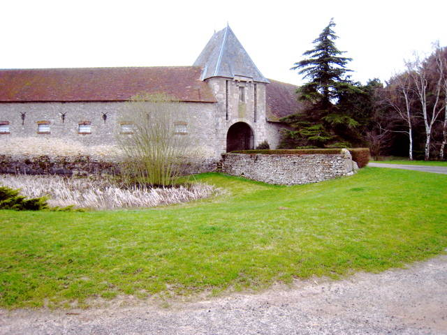
Châtelaillon, c'est loin, un petit arrêt pique-nique au bord d'un champ, sous une pluie battante, près de cette splendide ferme-château, avec pont-levis (ex) et douves... Mais pour repartir, bernique, la terre est devenue molle et je m'enlise ! Heureusement, des gens de la ferme passent en 4x4 et s'arrêtent, grand merci à eux ! D'autant qu'ils me disent qu'ils viennent de faire laver leur belle machine ! Ils se foutent bien un peu des parisiens, mais gentiment... Enfin, ils me tractent (j'ai toujours des sangles avec moi, qui m'ont déjà bien servi...) et arrivent à me sortir après moult patinage qui envoie de la boue jusque par-dessus mon toit ! C'est reparti, mais au-dessus de 110, grosses vibrations. Inquiétude, et puis je me dis que de la boue est sans doute restée dans les jantes et qu'elles sont déséquilibrées. Tant pis, on verra à Chatel ! Ah ben oui ! A force de vibration, mon échappement casse à l'arrière du pot catalytique (facture de ce matin : 512 Euros...). Je finis l'autoroute en Ferrari (pour le bruit, en tout cas...), un peu fatigant quand même ! A Chatel je vérifierai que c'était bien de la boue dans les jantes, démontages samedi matin, décrassage, le retour sera OK (sauf le bruit !).

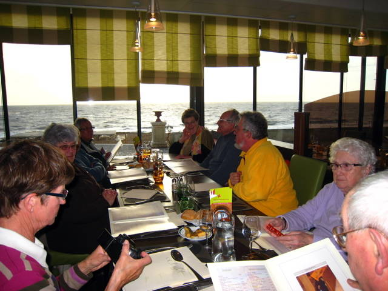
Au soir, dîner au Casino avec la fine fleur des anciens du CVCF et leurs épouses !

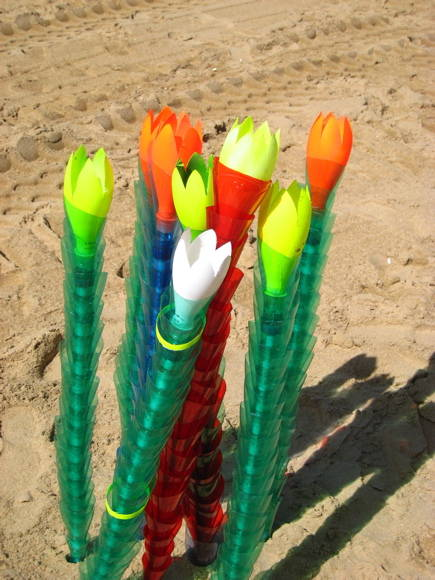
Dimanche matin, Fernando a déjà monté ses nouvelles fleurs !

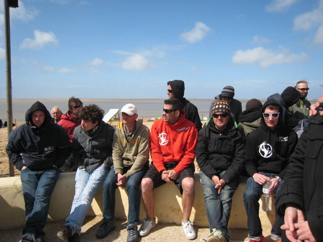
Les ToxiKiters sont prêts et s'éclateront tout le week-end en traction et en kite-surf...

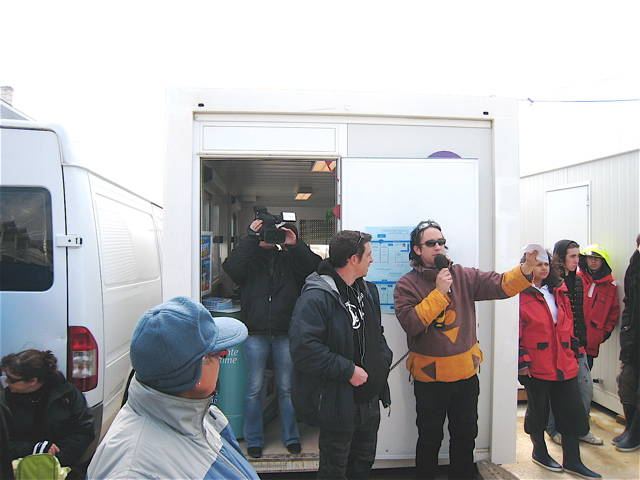
Pierre Dunoyer, chef de terrain et commentateur tiendra le micro en compagnie de son compère ! Pierrot est depuis longtemps recordman du monde de saut à cerf-volant (84 m, je crois), même s'il ne pratique plus, mais il n'y a plus personne d'assez fou pour essayer d'améliorer ! Son co-commentateur fera 2 ou 3 essais de saut, mais partira en ambulance avec une cheville en compote au dernier...
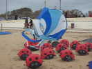
Le vent est très fort, 45 km/h en moyenne, mais on notera 100 km/h aujourd'hui sous un grain ! Bien sûr, sous les grains, il flotte aussi, ça n'arrange rien !

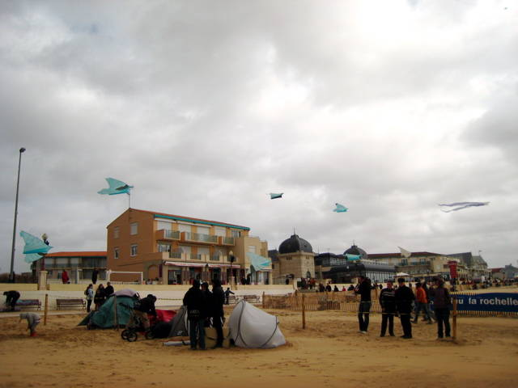
Les Awita sont là et ont courageusement monté d'abord leurs deltas qui tiendront les 2 jours, au prix de casses de vergues assez nombreuses quand même...

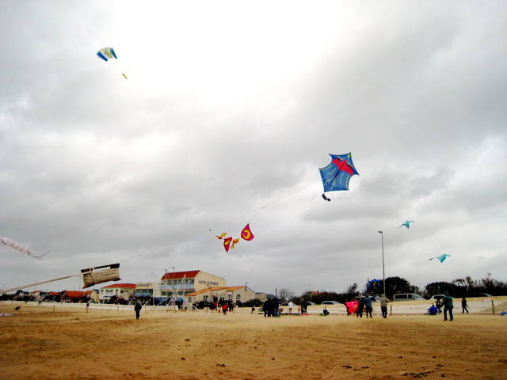
J'ai monté mon Rokkaku, pas envie de casser un Albatros que je garde pour le moment de gloire du vol de nuit. Pas besoin de cintrer avec les ficelles, le vent s'en charge ! J'ai monté les fanions CVCF, mais avec ce vent, la ligne et eux sont un peu à l'horizontale et la lisibilité n'est pas extra. Je ferai mieux plus tard...

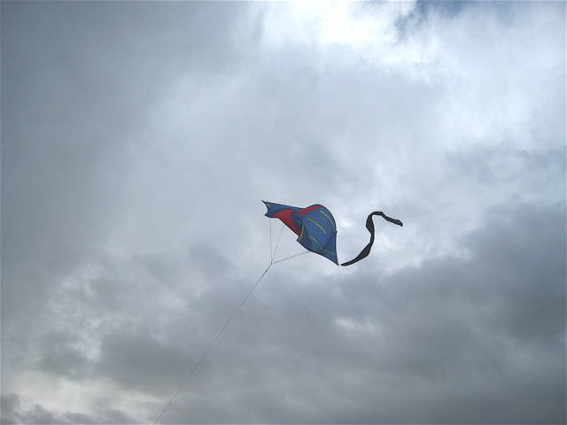
J'ai essayé de monter la gaine en guise de queue, mais la photo montre bien que ça ne sert à rien. Il aurait fallu intercaler une grande ligne pour l'écarter de l'écoulement perturbé par le CV...

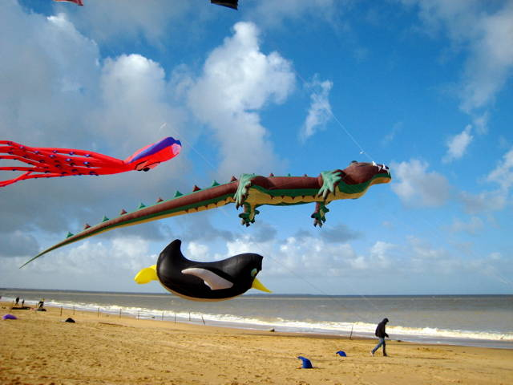
Les Awita n'ont pas eu peur de monter aussi du gros ! Pieuvre, crocodile, manchot, tout le monde vole !

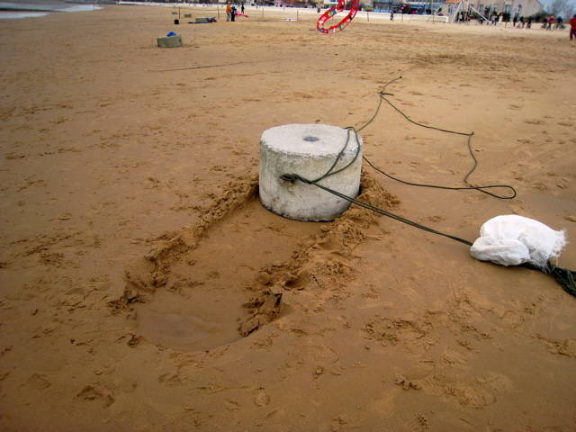
Bon, ils en redescendront un peu avant que l'ancrage d'une demi-tonne n'arrive sur la promenade !

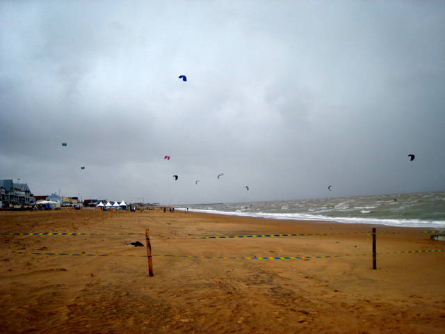
Comme je vous l'ai dit, les Kite-Surfers en mettent un coup, même s'ils ne font pas tous partie du festival !

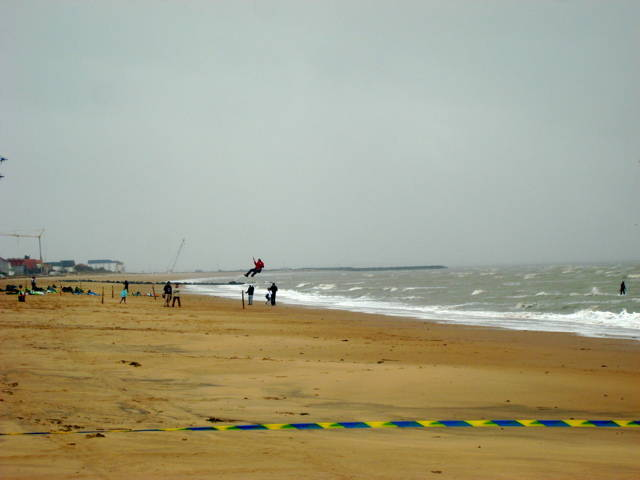
Evidemment, on ne peut pas faire de la traction sans essayer de sauter un peu, je vous ai dit le résultat...

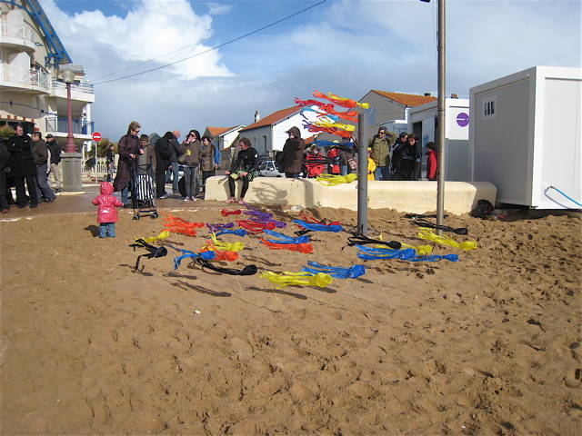
Dom et Ludo ont monté leurs boutiques, Dom a fabriqué des petites pieuvres amusantes qui forment un petit sac dans lequel on peut mettre ce qu'on veut pour les enfants, par exemple des oeufs de Pâques !

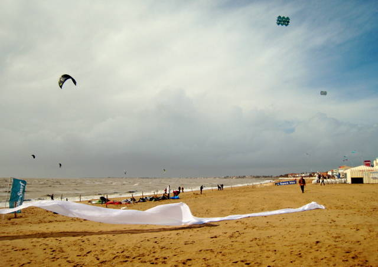
Pas beaucoup de monofils en vol, à part les 2 cellulaires, Pierre décore la plage avec de grandes queues soyeuses et ondulantes !

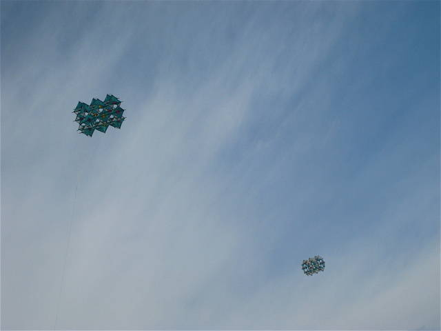
Voilà les 2 monofils plus en détail, on m'a nommé les auteurs, mais j'ai oublié, excuses...

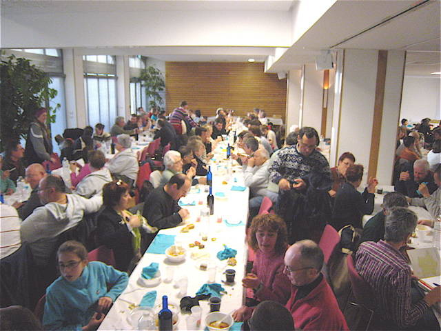
Après cette journée trépidante, le vent, la pluie, le froid (pas trop), il faut récupérer... Dîner dans le magnifique établissement Beauséjour, bien équipé pour les réceptions.

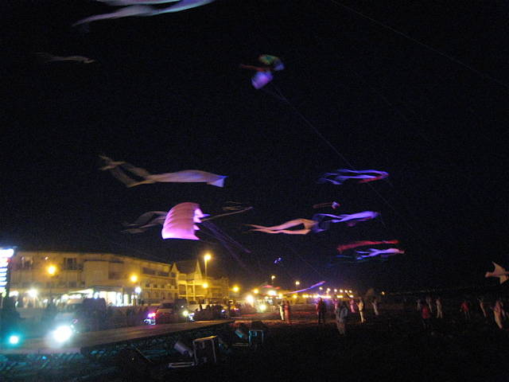
Beau vol de nuit, le vent a un peu baissé, et chacun fait un effort pour honorer la prestation ! Beaucoup d'éclairage, du coup, les photos sont à peu près honnêtes, pas trop bougées ! A droite, des Pyrodeltas, un Flow-form, une Colombe...

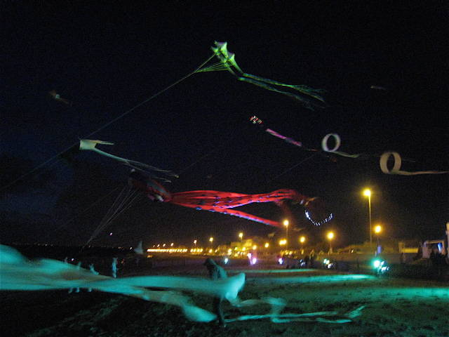
A gauche, les Awitas ont remonté la Pieuvre, 2 circoflexs à queue longue, et pas mal d'autres ! J'ai cassé Albatros 1 au montage sur une fausse manoeuvre, c'est bête. Mais Albatros 2 volera, un peu moins stable que le 1 quand même...

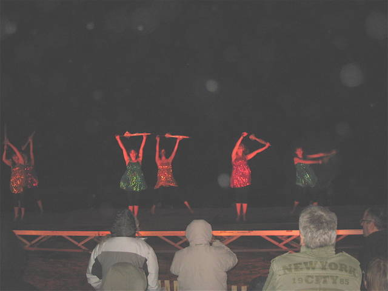
J'espère que les non-habitués seront un peu entrés dans la magie du vol de nuit... On change de matière, les danseuses sont arrivées, bien courageuses malgré leurs parapluies qu'elles n'ont pas ouverts, sage prudence !

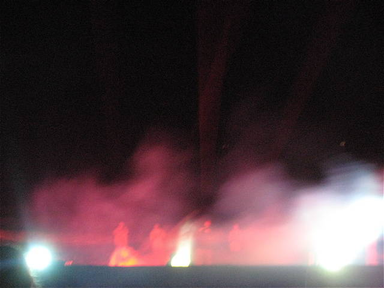
Pas un feu d'artifice, mais une pyrotechnie en couleur avec fumées d'ambiance ! Au fond, les 4 pilotes de 2-lignes, qui ont malheureusement des lignes un peu longues pour être vraiment du spectacle...

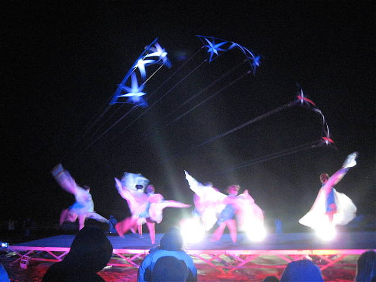
D'autres danseuses, avec de grands voiles sur bâtons à la Loïe Fuller , pendant que les FLICs décorent le ciel avec des Révos vraiment très ventilés...

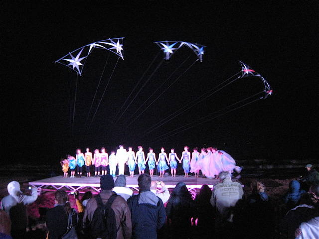
Tableau final : on ne s'est pas moqué des spectateurs, que d'acteurs !

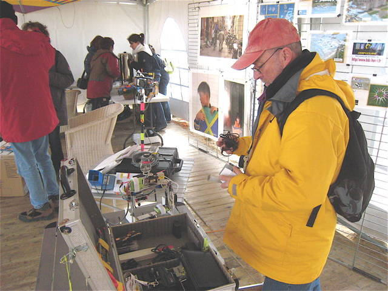
Dimanche matin, retour aux stands. Le concours photo est prolongé compte-tenu de la météo défavorable hier et du nombre limité de cerfs-volants, alors que le sujet est "le festival". Dominique Henry a monté une expo explicative où il présente et démontre ses photos et ses matériels, dont une vidéo prise depuis un cerf-volant en temps réel.

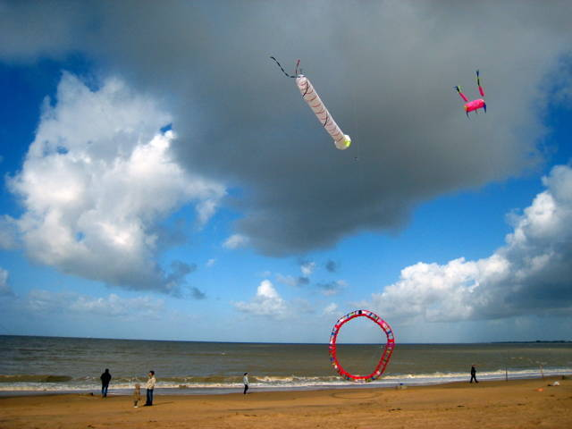
Le vent est plus Nord qu'hier, plus raisonnable aussi, mais tiendra pourtant ses 40 km/h régulièrement, avec beaucoup moins de grains et plus de soleil quand même !

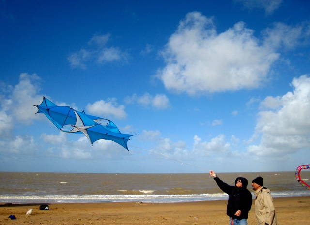
Eric essaye de faire voler son cerf-volant verticalement pour diminuer la traction, mais l'engin veut absolument rester horizontal !

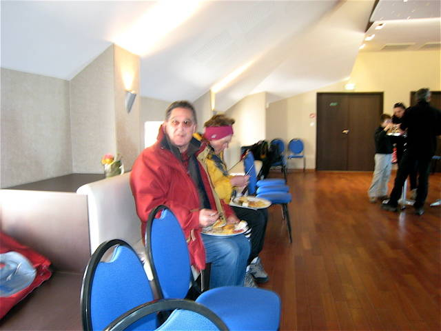
Déjeuner-buffet à la salle Beauséjour, trop luxueux comme l'an dernier, mais toujours pas de quoi s'attabler... Pas d'huîtres, malheureusement, les boucholeurs ont trop souffert de la tempête !

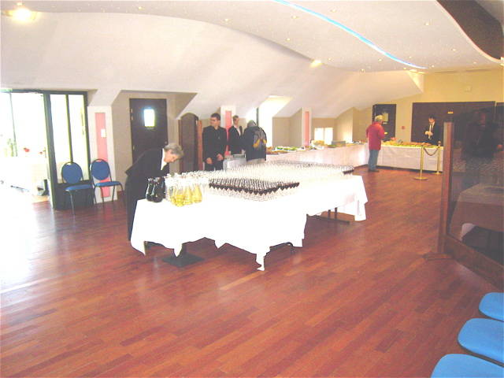
J'arrive dans les premiers, espérant que le vent baissera après déjeuner... Tout est prêt, les verres sont pleins, les victuailles disposées savamment dans cette magnifique salle...

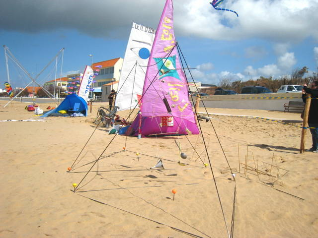
(inspire par mes suggestions precedentes, me dit-il...) !
Retour sur la plage : Pierre Morvan a monté ses mobiles naturalo-culinaires... Derrière, de curieuses bannières à l'emblème de l'Oeil d'Eole...

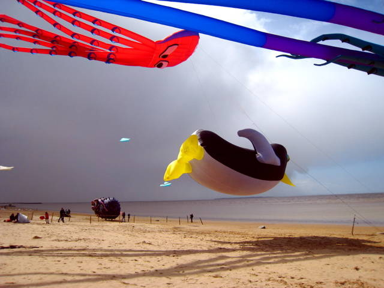
AWITA a remis en l'air le manchot, la Pieuvre, mais aussi le Calmar géant, alors qu'un grain passe à gauche, mais ne troublera les opérations que par quelques gouttes !

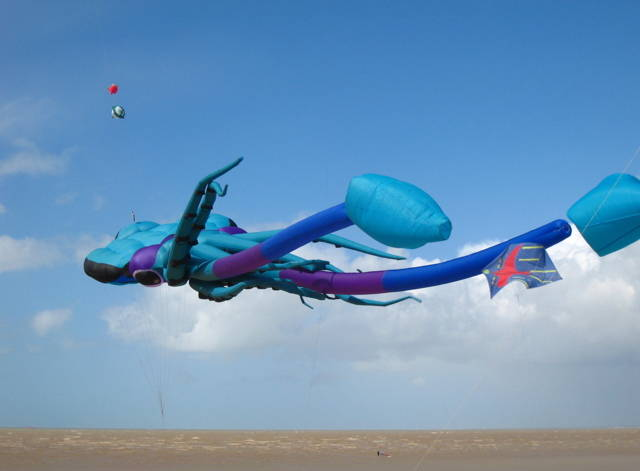
Le vent tourne et devient plein Ouest au passage du grain. Il faudra que je déplace mon Rokkaku qui flirte de trop près avec le Calmar...

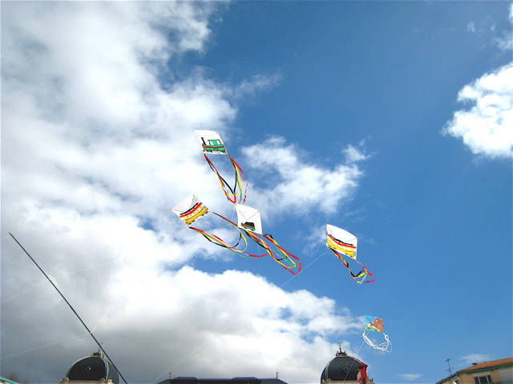
Eric prépare son cerf-volant du concours de création, sujet : le Train. Lui a fait un vrai train : en haut la Loco, dessous le tender, et de chaque côté, 2 wagons... Ils ne sont pas montés... en train, mais parallèlement sur une barre. Malheureusement, ça s'emmêle souvent, et ça volera moins bien lors du concours. Résultat : 2ème... seulement ! C'est Bruno Cocandeau qui a gagné, encore !

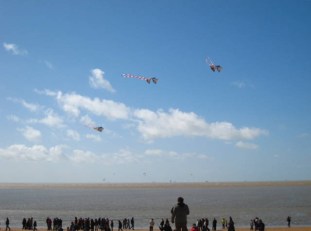
On verra aussi les enfants d'une école qui ont fabriqué pour la circonstance des sleds avec des queues en U qui voleront bien, Bravo !...

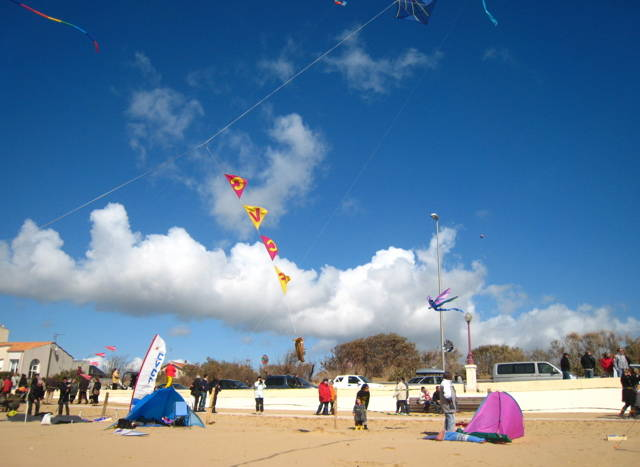
Je continue mes essais de fanions CVCF, avec un seul point d'attache et un lest : un gant au quart rempli de sable ! Ca me satisfait assez, et pourtant le vent est fort !

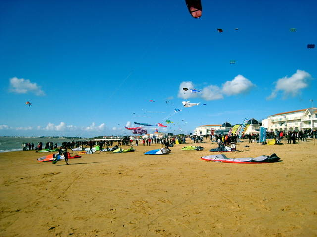
Les Kite-Surfers ont gonflé leurs voiles qui attendent sagement le départ sur le sable. Plus loin, il y a maintenant pas mal de cerfs-volants en l'air !

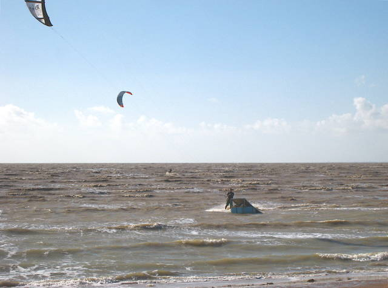
Les Kiters ont même amené des obstacles à sauter, mais qui ne m'ont pas semblé très utilisés ! Peut-être que le Kite-Surf n'a pas besoin de tremplin pour sauter et que la synchronisation du saut et du passage sur le tremplin est difficile... si même le tremplin apporte quelque chose !

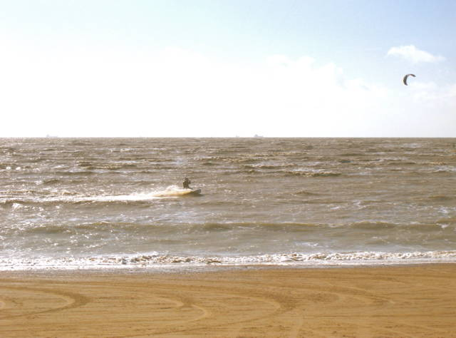
On peut assister à de très grands runs prolongés qui soulèvent des gerbes de hors-bords !

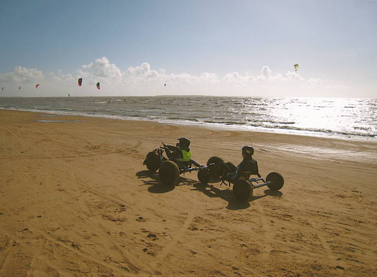
Sur le sable, des chars ou buggies à cerfs-volants, dont certains biplaces font de l'initiation ! Ici, le passager a son demi-char à lui...

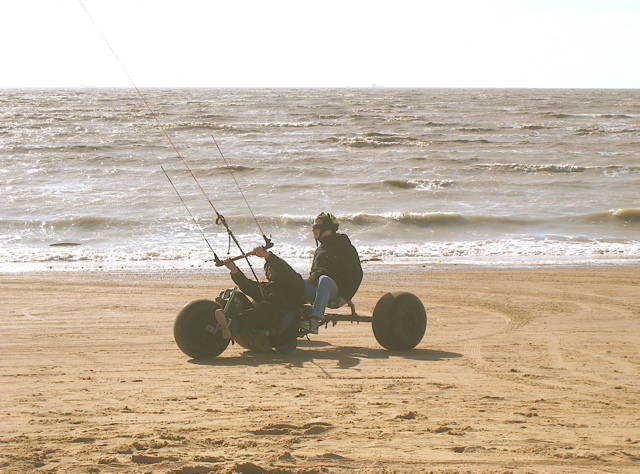
Celui-ci a carrément un char à 2 places en tandem, un peu décalées en hauteur !

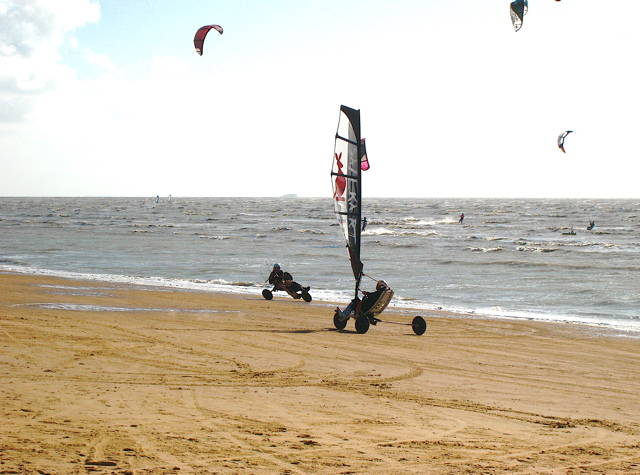
Sont venus aussi des chars à voile, avec un mât et une voile ! Le Sail-Kart est rapide et joueur, et surtout se démonte pour entrer dans un coffre de voiture.

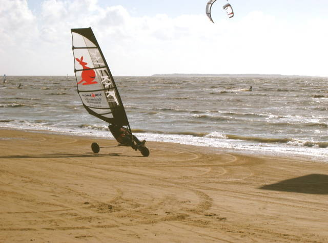
Bon, dit le Sail-kart, moi aussi je peux le faire !

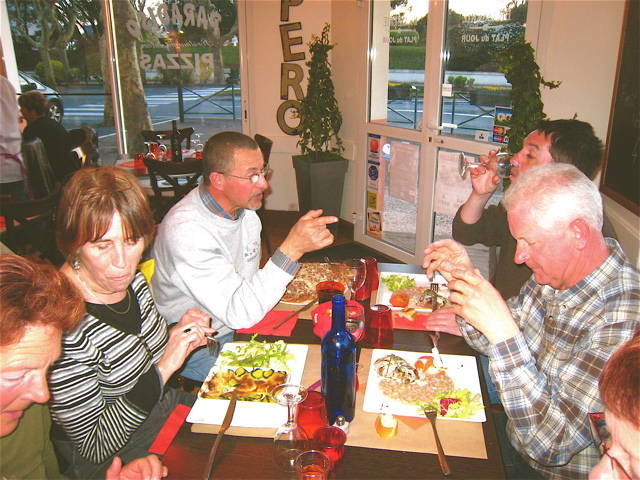
Voilà, le festival tire à sa fin. Beaucoup de cervolistes ne partiront que demain, lundi de Pâques, et se retrouvent au restaurant pour un dernier dîner convivial !

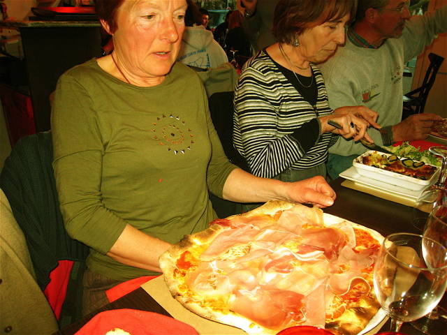
Marie-Claude est en train de se demander si elle trouvera la place pour une pizza de cette surface, couverte de jambon !

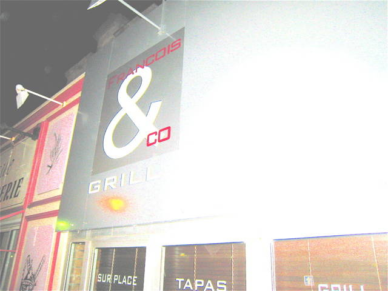
On sort, et les membres du CVCF reconnaissent leur PC à son enseigne !

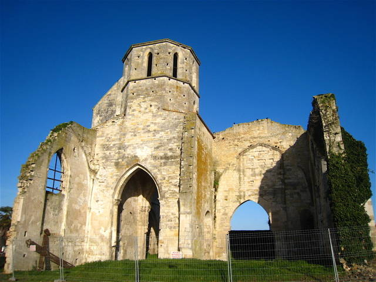
Lundi, je ne pars pas trop tard pour ne pas trouver trop de circulation vers Paris, d'autant que je devrai sans doute m'arrêter pour me reposer les oreilles ! Je vais quand même voir la superbe église romane (un peu ruinée...) à clocher octogonal de Marans, en plein milieu du Marais Poitevin...

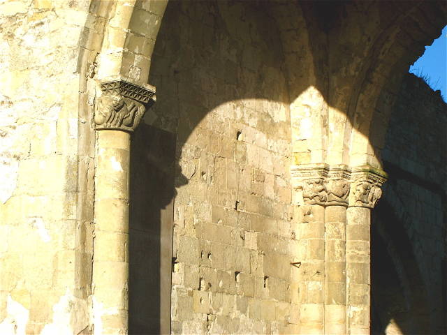
Elle possède encore de beaux chapiteaux historiés comme on en voit peu !

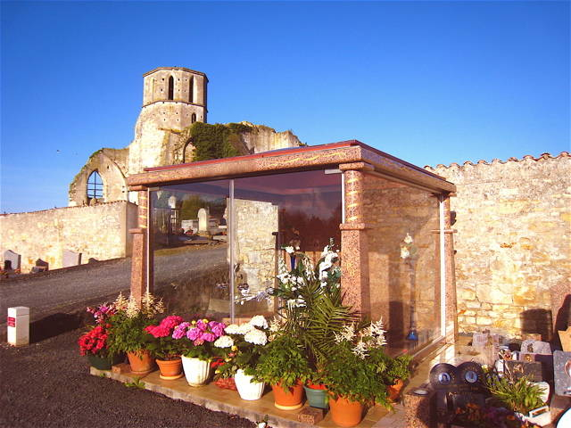
Dans le cimetière, un monument funéraire de style différent qui, s'il fait étalage du niveau financier de ses commanditaires, dénote un peu face à la simplicité de l'église !

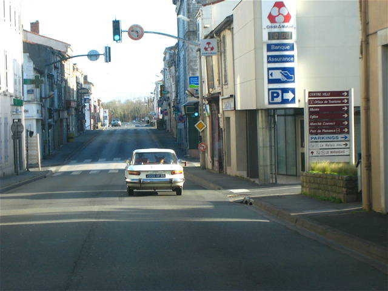
Je reprends la route. A Nogent-Le-Rotrou, je tombe sur une Panhard de sport (24 CT) que son propriétaire doit entretenir amoureusement, elle semble impeccable !

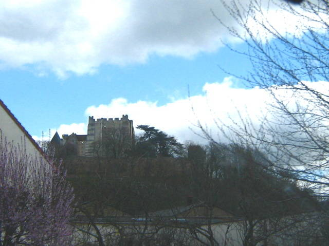
Un dernier coup d'oeil sur le château Saint-Jean sur la hauteur, mais je sens déjà l'odeur de mon petit Courdimanche et je ne m'arrête pas !
Châtelaillon 2010 : La météo a été assez rude, avec des vents forts en continu, et quelques grains solides ! Mais l'organisation a été à la hauteur, les terrains plus vastes que l'an dernier à la satisfaction générale, et la chère excellente. Bravo à tous !